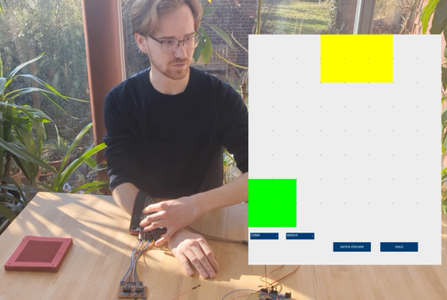
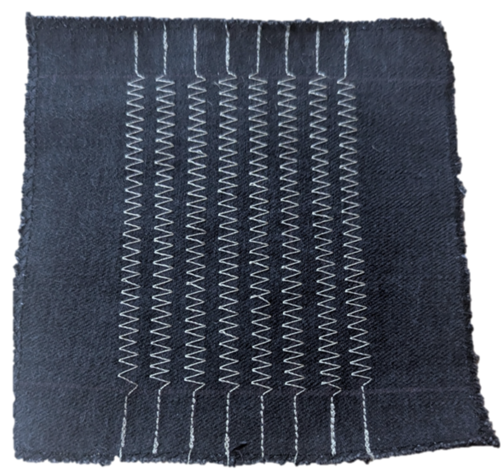
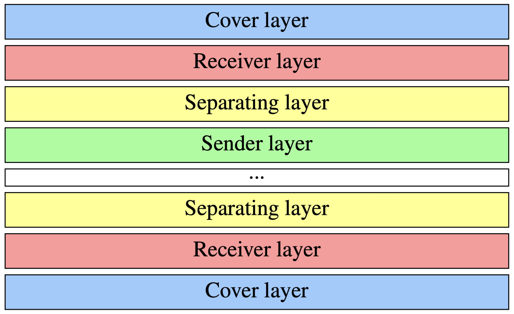

← Selected work
Tactile sensing / 2024 – present
Giving robots a sense of touch
From a conductive-thread prototype to leading the skin team for a humanoid robot.
- Context
- BSc project → RSA Project Echo, TU Delft
- Period
- BSc: Sep 2024 – Mar 2025 · Project Echo: Sep 2026 – present
- My work
- Tactile prototype development · Skin Team Lead, RSA Project Echo
The idea
How can a robot’s surface detect where it is being touched? With Fabio at TH Köln, I explored a tactile skin made from conductive thread and a layered fabric structure. Since September 2026, I have been building on that experience as the skin team lead of RSA Project Echo at TU Delft.
My contribution
- Wove conductive thread into robust fabric to create sender and receiver layers, separated by a laser-cut foam-rubber mesh with different resistances.
- Used shift registers and simple measurement circuits to read the sensor and display detected touch locations.
- Tested the bachelor’s prototype through hands-on touch localisation experiments.
- Now lead Project Echo’s skin team, researching scalable sensing and soft-skin concepts that combine touch localisation, approximate force sensing, and protection.
A prototype, and the next research questions
The initial prototype explored touch localisation. At Project Echo, the current research also considers approximate force sensing and protection. The team’s goal is a humanoid aimed at competing in RoboCup Rescue 2028; this is an ongoing development effort.


